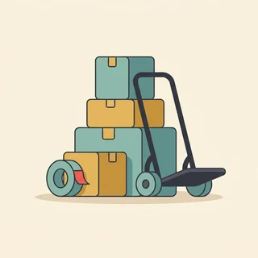

deutschoderwas · Sprechclub · Woche 10 · Strang B · Teil 2 · Donnerstag, 19. November
Wo sie stehen — stehen und stellen, liegen und legen, sitzen und setzen
Sieben Verben, drei Paare, eine einzige Frage: Tue ich gerade etwas mit einem Ding — oder sage ich nur, wo es ist? Beim Tun steht der Akkusativ und die Frage wohin. Beim Sein steht der Dativ und die Frage wo. Mehr ist es wirklich nicht.
Gleiches Thema, andere Sätze. Wechsle jederzeit — probier ruhig beide Seiten aus.
Erst mal ankommen
Eine Frage, ein Satz pro Person. Reihum.
Wo liegt dein Handy gerade?
Welches der drei Paare macht dir am meisten Ärger?
🆘 Wie fange ich an?
Bei mir war das so: …Ich habe einmal …Ich glaube, das ist …
Bei mir war das so: …Ehrlich gesagt habe ich das noch nie …Mir fällt spontan ein Fall ein, in dem …
Vier Situationen — zwei Runden
1Runde 1: Lest den Dialog zu zweit laut.
2Runde 2: Klappt die Zeilen zu und sprecht frei — nur die Stichwörter bleiben.

Dialog 1 · „Der Umzug“
A trägt die Kisten herein und weiß nicht wohin. B steht in der Wohnung und sagt es ihm.
A
Wohin soll ich die Kartons stellen?
B
Stell sie erst mal in den Flur. Im Zimmer steht noch das Bett quer.
🗣️ Zweimal dasselbe Verb, zwei Formen: stell mit in den Flur (wohin, Akkusativ), steht mit im Zimmer (wo, Dativ).tippen = Hilfe zeigen
A
Und die Lampe? Die ist ziemlich schwer.
B
Leg sie vorsichtig auf das Sofa, dann hängen wir sie später auf.
🗣️ legen, weil die Lampe jetzt flach daliegt. Und aufhängen für später — dasselbe Ding, zwei verschiedene Verben.tippen = Hilfe zeigen
A
Ich brauche eine Pause. Wo kann man sich hier hinsetzen?
B
Setz dich auf den Stuhl am Fenster, der steht schon richtig.
🗣️ Setz dich für die Bewegung, steht für den Stuhl. In einem Satz beide Muster.tippen = Hilfe zeigen
Dialog 2 · „In der Küche“
A sucht etwas und findet es nicht. B weiß genau, wo alles hingehört.
A
Wo sind denn die großen Löffel?
B
Die liegen in der zweiten Schublade, ganz vorn.
🗣️ liegen für Besteck, weil es flach daliegt. Und in der Schublade — Dativ, weil nichts bewegt wird.tippen = Hilfe zeigen
A
Und die Gläser? Ich sehe nur Tassen.
B
Die stehen im Schrank über der Spüle. Stell sie danach bitte wieder zurück.
🗣️ stehen und dann stellen — Zustand und Handlung direkt hintereinander. Achte auf im Schrank gegen zurück.tippen = Hilfe zeigen
A
Mache ich. Wo hängt das Handtuch?
B
Am Haken neben der Tür. Häng es bitte auch wieder dorthin.
🗣️ hängen zweimal — einmal als Zustand (am Haken, Dativ), einmal als Bitte (dorthin, Richtung).tippen = Hilfe zeigen
Dialog 3 · „Im Lager“
A ist neu in der Firma und soll die Lieferung einräumen. B erklärt das System.
A
Die Lieferung ist da. Wohin damit?
B
Stell die Kartons ins Regal drei, und leg die Lieferscheine auf den Schreibtisch.
🗣️ Beide Tun-Verben in einem Satz: stellen für die Kartons (hoch), legen für das Papier (flach). Beides mit Akkusativ.tippen = Hilfe zeigen
A
Im Regal drei steht schon etwas.
B
Das ist die alte Ware, die liegt da seit dem Sommer. Stell sie einfach nach unten.
🗣️ steht und liegt für dasselbe Regal — je nachdem, ob die Ware aufrecht ist oder nicht.tippen = Hilfe zeigen
A
Und wo trage ich das ein?
B
Die Liste hängt hinten an der Tür. Häng sie danach wieder auf, sonst sucht sie morgen jeder.
🗣️ Zum dritten Mal hängen in beiden Rollen. Wer das hier hört, hat das Muster.tippen = Hilfe zeigen
Dialog 4 · „Am Schreibtisch“
A sucht eine Rechnung. B hat sie zuletzt gehabt und erinnert sich nur ungefähr.
A
Hast du die Rechnung gesehen? Sie lag gestern noch hier.
B
Ich habe sie in den Ordner gelegt. Der steht links im Regal.
🗣️ gelegt mit in den Ordner (Bewegung), steht mit im Regal (Zustand). Perfekt und Präsens direkt nebeneinander.tippen = Hilfe zeigen
A
Da ist sie nicht. Nur die alten Verträge liegen drin.
B
Dann habe ich sie vielleicht auf den Stapel gelegt, der hinten auf dem Schrank liegt.
🗣️ Wieder beide Fälle: auf den Stapel beim Hinlegen, auf dem Schrank beim Daliegen.tippen = Hilfe zeigen
A
Ah, hier ist sie. Ganz unten.
B
Gut. Leg sie mir bitte auf den Tisch, ich hefte sie gleich ab.
🗣️ Ein letzter Auftrag mit legen und Akkusativ. Abheften ist übrigens das Wort, das in jedem deutschen Büro fällt.tippen = Hilfe zeigen
🎭 Und jetzt ihr: Spielt Dialog 2 mit eurer eigenen Küche. Regel: In jeder Antwort muss ein Zustand-Verb und ein Tun-Verb vorkommen.
⏱️ Die 90-Sekunden-Challenge
Neunzig Sekunden über dein Zimmer: Was steht darin, was liegt, was hängt — und wohin stellst du gleich als Erstes etwas zurück?
Dein Wort
der Schrank
1:30
Vier Sätze, dann trägt dich die Zeit:
steht:Bei mir steht der Tisch direkt am Fenster.
liegt:Auf dem Tisch liegen meistens zu viele Zettel.
hängt:An der Wand hängt ein Bild, das ich selbst gemalt habe.
stelle / lege:Gleich stelle ich die Tasse in die Küche und lege die Post weg.
Und wenn du in der Mitte hängst, nimm dasselbe Ding noch einmal und dreh es um: Das Buch liegt hier wird zu Ich habe das Buch hierher gelegt. Schon geht es weiter.
⏱️ Spielregel: In jeder Runde müssen drei verschiedene Verben vorkommen. Wer Ich liege das hin sagt, fängt noch einmal an.
🎭 Drei Situationen zu zweit
1Einer fragt, einer weist an.
2Danach tauschen — beim zweiten Mal ohne die Sätze unten.
3Mindestens drei Verbpaare pro Runde.
1Umzugstag
A
trägt die Sachen herein und fragt bei jedem Teil nach.
B
kennt die Wohnung und sagt genau, wohin alles soll.
Sätze, die dir helfen
Wohin soll ich das stellen?Leg ich das hier hin?Wo steht das Bett?Kann ich mich kurz hinsetzen?
Stell die Kartons erst mal in den Flur, im Zimmer steht noch das Bett querLeg die Lampe vorsichtig aufs Sofa, wir hängen sie später aufDie schweren Kisten stellst du am besten nach untenSetz dich auf den Stuhl am Fenster, der steht schon richtig
🎯 Geschafft, wennBei jedem Ding stand das richtige Verb — und beim Hinstellen kam der Akkusativ, beim Beschreiben der Dativ. Mindestens einmal kamen beide im selben Satz vor.
🆘 Und wenn B nein sagt?
Das verstehe ich. Aber …Kann ich bitte fragen: …?Was kann ich jetzt machen?
Das verstehe ich — trotzdem bleibe ich dabei: …Darf ich kurz nachfragen: …?Wer kann das denn entscheiden?
2Ich finde es nicht
A
sucht etwas Wichtiges und wird langsam nervös.
B
hat es zuletzt gehabt und erinnert sich nur Stück für Stück.
Sätze, die dir helfen
Wo liegt denn der Schlüssel?Hast du ihn irgendwo hingelegt?Steht das noch im Regal?Ich habe überall geschaut
Ich habe ihn gestern auf die Kommode gelegt, da müsste er noch liegenKann sein, dass ihn jemand in die Schublade gelegt hatSchau mal hinter den Ordnern, die stehen ganz linksWenn er nicht da liegt, hängt er vielleicht am Haken neben der Tür
🎯 Geschafft, wennBeide haben Bewegung und Zustand sauber getrennt: gelegt mit wohin, liegt mit wo. Und niemand hat Ich liege es hin gesagt.
🆘 Und wenn B nein sagt?
Das verstehe ich. Aber …Kann ich bitte fragen: …?Was kann ich jetzt machen?
Das verstehe ich — trotzdem bleibe ich dabei: …Darf ich kurz nachfragen: …?Wer kann das denn entscheiden?
3Der erste Tag im Lager
A
fängt heute an und soll die Lieferung einräumen.
B
erklärt, was wohin gehört — und warum das System wichtig ist.
Sätze, die dir helfen
Wohin kommen die Kartons?Wo liegen die Lieferscheine?Soll ich das ins Regal stellen?Wo hängt die Liste?
Stell die Kartons ins dritte Regal und leg die Papiere auf den SchreibtischDie alte Ware liegt seit dem Sommer da, die stellst du einfach nach untenDie Liste hängt hinten an der Tür, häng sie danach wieder aufWenn alles an seinem Platz steht, findet es auch die Spätschicht
🎯 Geschafft, wennAlle drei Paare sind vorgekommen, und mindestens einmal stand ein Tun-Verb und ein Zustand-Verb im selben Satz. Der Fall hat jedes Mal zum Verb gepasst.
🆘 Und wenn B nein sagt?
Das verstehe ich. Aber …Kann ich bitte fragen: …?Was kann ich jetzt machen?
Das verstehe ich — trotzdem bleibe ich dabei: …Darf ich kurz nachfragen: …?Wer kann das denn entscheiden?
🎴 Sprechkarten
Zieh eine Karte. Vier Sätze am Stück.
Deine Aufgabe
Tippe auf den Knopf.
Drei gegen drei
Zwei Gruppen, eine Frage. Abwechselnd sprechen.
Grammatikfehler sind egal, solange man verstanden wird.
Gruppe A · dafür
Hauptsache, das Gespräch läuft weiter.
Wer Angst vor Fehlern hat, sagt gar nichts.
Auch Deutsche machen Fehler.
Gruppe B · dagegen
Bei wohin und wo versteht man es wirklich falsch.
Im Beruf achten Leute darauf.
Wer Fehler nie hört, behält sie für immer.
Zum Schluss
Ein Satz von jedem.
Welchen Satz von heute nimmst du mit — und wo brauchst du ihn?
🆘 Wie fange ich an?
Ich nehme mit: …Ich will den Satz „…“ benutzen.Neu war für mich: …
Ich nehme mit, dass …Den Satz „…“ will ich nächste Woche wirklich benutzen.Neu war für mich, dass …
📮 Deine Hausaufgabe bis Montag
Vier kleine Aufgaben, zusammen etwa 25 Minuten. Nächste Woche fangen wir mit einem neuen Thema an.
💡 Warum das hilft: Diese sieben Verben kommen jeden Tag vor — zu Hause, im Lager, im Büro, beim Arzt. Sie sind der häufigste Fehler auf B1 und der letzte, der verschwindet. Wer sie sicher hat, klingt sofort ein Stück deutscher.
0 von 0 Aufgaben geschafft.
So sehen die zehn Sätze aus:
Der Tisch steht vor dem Fenster.
Auf dem Tisch liegen drei Bücher.
An der Wand hängt eine Uhr.
Im Regal stehen die Ordner.
Ich sitze auf dem Stuhl neben der Tür.
Ein einziger Test genügt: Frag bei jedem Satz wo. Wenn die Antwort passt, muss dort der Dativ stehen — dem, der, dem. Kommt dir wohin in den Sinn, hast du das falsche Verb.
Das sind die Formen, auf die es ankommt:
legen: legte, hat gelegt — liegen: lag, hat gelegen
stellen: stellte, hat gestellt — stehen: stand, hat gestanden
setzen: setzte, hat gesetzt — sitzen: saß, hat gesessen
hängen (tun): hängte, hat gehängt — hängen (sein): hing, hat gehangen
Und ein Satz mit beidem:Ich habe das Bild an die Wand gehängt, dort hat es zehn Jahre gehangen.
Ein Hinweis, der viel spart: Die Tun-Verben sind alle regelmäßig, die Zustand-Verben alle unregelmäßig. Wenn du also eine unregelmäßige Form hörst, weißt du schon, dass kein Objekt dahinterkommt.